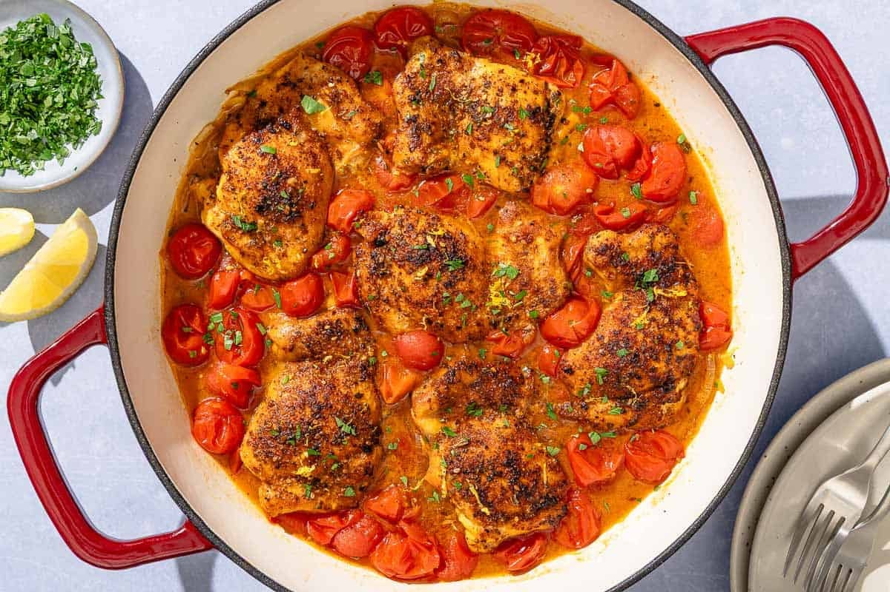

Skillet Chicken Thighs with Cherry Tomatoes

One-pan za’atar chicken thighs with a fresh cherry tomato and lemon sauce — a Mediterranean weeknight dream.
2 tspza’atar, divided1 tspsweet Spanish paprika1 tspgarlic powder½ tspred pepper flakes or Aleppo pepper6boneless, skinless chicken thighs- kosher salt and black pepper
- extra virgin olive oil
1medium yellow onion, halved and thinly sliced2medium garlic cloves, thinly sliced3 cupsfresh cherry tomatoes1large lemon, zested and juiced¼ cupchopped fresh parsley, for garnish
Make the seasoning for the chicken. In a small bowl, mix 1 tsp za’atar (reserving the remaining teaspoon for later) with the sweet paprika, garlic powder, and red pepper flakes.
Season the chicken. Pat the chicken dry and season well with the seasoning mix and a good dash of kosher salt and black pepper (about ½ to ¾ tsp each).
Sauté the aromatics. In a large non-stick or cast iron skillet with a lid, heat about 2 tbsp of extra virgin olive oil over medium high heat until shimmering. Add the onion and a pinch of kosher salt and cook for about 4 minutes, tossing occasionally, then add the garlic and cook for another 30 seconds or so.
Sear the chicken. Scoot the onions out to the side of the pan to create an opening for the chicken. Now, add the chicken and cook on one side undisturbed for about 4 to 5 minutes or until golden brown, then, using a pair of tongs, turn the chicken over.
Cook the cherry tomato sauce. Add the cherry tomatoes, lemon juice, the remainder of the za’atar, and another pinch of kosher salt and black pepper. Cover and cook for about 5 to 10 minutes or until the cherry tomatoes have fully collapsed into a sauce. You can help them along by gently crushing them with the back of a spoon. Taste and adjust seasoning to your liking.
Finish and serve. Remove the skillet from the heat. Drizzle with a little more extra virgin olive oil, then sprinkle with lemon zest and chopped fresh parsley. Serve warm with crusty bread, rice, or couscous.